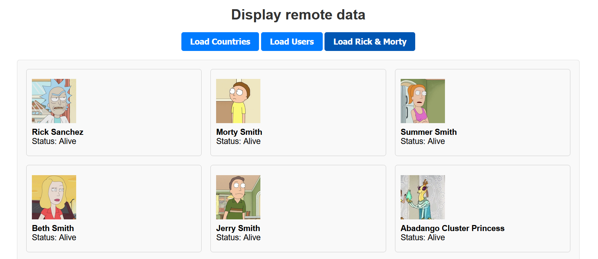

Learning Goals
At the end of this Tutorial, you will be able to:
- Use a text input with the input event to filter live API data as the user types.
- Build a <select> dropdown that triggers a Fetch API call when the user makes a selection.
- Create a styled CSS toggle switch that applies a light/dark theme to a web page.
- Use <input type="range"> to let users adjust a visual property on screen in real time.
For this Tutorial, in your exercises folder, create a new web page named forms-2.html.
Create a new empty text file named forms-2.js and save it in this same folder.
Add a link to forms-2.js in the <head> of your forms-2.html web page using a <script> tag with the defer attribute.
You will also expand on the list-remote.html and list-remote.js files used in the Accessing remote APIs Tutorial.
Introduction
In the Introduction to forms Tutorial, you worked with text, email, password, and number fields, and learned how to validate them on submission and in real time. In this tutorial, you'll explore four more interactive form elements that are fundamental to modern web applications:
- A text input that filters live API results on every keystroke.
- A dropdown list that triggers a Fetch API call when the user selects an option.
- A toggle switch that applies a light or dark theme to the page.
- A range slider that adjusts a visual property in real time.
Each of these connects a form element to a JavaScript event listener — the same fundamental pattern you have already practised.
Filtering with a text input
You have already used the input event to provide real-time validation feedback. Here, you will use the same event to do something more powerful: fire a Fetch API request on every keystroke and display matching results dynamically.
The Rick & Morty API
Display the list-remote.html file from the Fetch remote APIs Tutorial and click the Load Rick & Morty button. You should see a list of characters appear, each with their name, status, and image.
The endpoint used by the API is as follows:
https://rickandmortyapi.com/api/characterThe Rick & Morty API supports searching by character name via a query string parameter. For example, the URL below returns all characters whose name contains "rick":
https://rickandmortyapi.com/api/character/?name=rickIn the address bar of your browser and test the following two URLs to see the difference in the responses in the console:
https://rickandmortyapi.com/api/character/?name=rickThe above returns matching characters. Now try the URL below:
https://rickandmortyapi.com/api/character/?name=zzzThe above returns an error object because no characters match "zzz".
Your code needs to check for this and handle it gracefully, rather than crashing when it tries to loop through results that don't exist.
Now, let's add a text input that lets the user search for any character by name.
First, add this CSS to the <head> of your list-remote.html file:
section#filter-rm {
max-width: 500px;
margin: 40px auto;
padding: 22px 32px;
background-color: #f9f9f9;
border: 1px solid #ddd;
border-radius: 8px;
display:none;
}
.form-group {
display: flex;
flex-direction: column;
margin-bottom: 20px;
}
.form-group label {
font-weight: bold;
margin-bottom: 6px;
color: #333;
}
.form-group input[type="text"] {
padding: 10px 12px;
font-size: 1rem;
border: 1px solid #ccc;
border-radius: 5px;
outline: none;
max-width: 320px;
transition: border-color 0.2s ease;
}
.form-group input[type="text"]:focus {
border-color: #007BFF;
}
.no-results {
color: #6c757d;
font-style: italic;
margin-top: 12px;
}This hides the Rick & Morty filter by default.
In your list-remote.html file, add the following HTML under the <h1> heading:
<section id="filter-rm">
<h2>Filter Rick & Morty characters</h2>
<div class="form-group">
<label for="characterSearch">Search characters:</label>
<input type="text" id="characterSearch" placeholder="e.g., Rick">
</div>
</section>And in list-remote.js, update the event listener for the button-container to hide the search option so that it only displays when the Load Rick & Morty button is clicked.
// Event listener on the parent container
document.getElementById("button-container").addEventListener("click", function(e) {
if (e.target.id === "btn-countries") {
document.getElementById("filter-rm").style.display = "none";
fetchCountriesData();
}
else if (e.target.id === "btn-users") {
fetchUsersData();
document.getElementById("filter-rm").style.display = "none";
}
else if (e.target.id === "btn-rm") {
// Clears the search field
document.getElementById("characterSearch").value = "";
// Clear any existing data and show the filter section
document.getElementById("remote-data-container").innerHTML = "";
// loads all characters
fetchRMData();
// Show the filter
document.getElementById("filter-rm").style.display = "block";
}
});Adding the filter logic
Your JavaScript file already has two functions to process the Rick & Morty data.
- Fetch function: This named fetchRMData() or similar.
- Display function: This is named displayRMData() or similar.
Paste the following into your list-remote.js file. Notice how the input event connects directly to the Fetch API call:
// -------------------------------------------------------
// Filter Rick & Morty characters by name
// -------------------------------------------------------
const characterSearch = document.getElementById("characterSearch");
// Fire a fetch on every keystroke
characterSearch.addEventListener("input", () => {
const searchTerm = characterSearch.value.trim();
// Don't fetch if the field is empty
if (searchTerm === "") {
const container = document.getElementById("remote-data-container");
container.innerHTML = "";
return;
}
fetchRMData(searchTerm);
});Replace the your current fetch function with the following:
async function fetchRMData(name = "") {
try {
const url = name
? `https://rickandmortyapi.com/api/character/?name=${name}`
: `https://rickandmortyapi.com/api/character`;
const response = await fetch(url);
const data = await response.json();
if (data.error) {
const container = document.getElementById("remote-data-container");
container.innerHTML = `No characters found matching "${name}".
`;
return;
}
displayRMData(data.results);
} catch (error) {
const container = document.getElementById("remote-data-container");
container.innerHTML = `⚠️ Could not load data. Please try again.
`;
console.error(error);
}
}Save your files and test the search box. As you type, matching characters should appear immediately. Note the following:
- The fetch fires on every keystroke, but only if the field is not empty.
- The data.error check handles the case where no characters match — without this, the code would crash trying to call .forEach() on undefined.
Dropdown lists and remote APIs
A dropdown list — created with the <select> element — is ideal when you want to offer the user a fixed set of choices. When those choices map directly onto API endpoint parameters, you can trigger a Fetch call the moment the user makes a selection.
The <select> element
A <select> element contains a list of <option> elements. Each <option> has a value attribute (what JavaScript reads) and display text (what the user sees).
As a first step, add the following CSS to the <head> of list-remote.html:
section#section-countries {
max-width: 500px;
margin: 40px auto;
padding: 22px 32px;
background-color: #f9f9f9;
border: 1px solid #ddd;
border-radius: 8px;
display:none;
}
.form-group select {
padding: 10px 12px;
font-size: 1rem;
border: 1px solid #ccc;
border-radius: 5px;
outline: none;
max-width: 320px;
transition: border-color 0.2s ease;
}
.form-group select:focus {
border-color: #007BFF;
}Add the following HTML to your list-remote.html, above the Rick & Morty section.
<section id="section-countries">
<h2>Countries by region</h2>
<div class="form-group">
<label for="regionSelect">Select a region:</label>
<select id="regionSelect">
<option value="">-- Choose a region --</option>
<option value="africa">Africa</option>
<option value="americas">Americas</option>
<option value="asia">Asia</option>
<option value="europe">Europe</option>
<option value="oceania">Oceania</option>
</select>
</div>
</section>Note the first option has an empty value. This acts as a prompt, telling the user to make a choice. Your JavaScript will check for this empty value and do nothing if it is selected.
In list-remote.js, update your event listeners as follows.
// Event listener on the parent container
document.getElementById("button-container").addEventListener("click", function(e) {
if (e.target.id === "btn-countries") {
document.getElementById("filter-rm").style.display = "none";
document.getElementById("section-countries").style.display = "block";
fetchCountriesData();
}
else if (e.target.id === "btn-users") {
fetchUsersData();
document.getElementById("filter-rm").style.display = "none";
document.getElementById("section-countries").style.display = "none";
}
else if (e.target.id === "btn-rm") {
// Clears the search field
document.getElementById("characterSearch").value = "";
// Clear any existing data and show the filter section
document.getElementById("remote-data-container").innerHTML = "";
// loads all characters
fetchRMData();
// Show the filter
document.getElementById("filter-rm").style.display = "block";
document.getElementById("section-countries").style.display = "none";
}
});The change event
Unlike the input event (which fires on every keystroke), the change event fires only once — when the user finishes making a selection and moves away from the element, or when they choose a new option from a dropdown. For a <select> element, it fires the moment a new option is chosen, making it the right event to use here.
Using the regions endpoint
The REST Countries API supports a /region/ endpoint that accepts any of the five region names as a URL parameter:
https://restcountries.com/v3.1/region/europe
https://restcountries.com/v3.1/region/africaBecause the <option> values in your HTML exactly match the region names the API expects, you can build the full URL simply by appending the selected value to the base endpoint.
Add this new event listener to your list-remote.js file:
// -------------------------------------------------------
// Countries by region dropdown
// -------------------------------------------------------
const regionSelect = document.getElementById("regionSelect");
regionSelect.addEventListener("change", () => {
const selectedRegion = regionSelect.value;
// Do nothing if the prompt option is selected
if (selectedRegion === "") {
const container = document.getElementById("remote-data-container");
container.innerHTML = "";
return;
}
fetchCountriesData(selectedRegion);
});Replace the current fetch countries function with the updated version below:
async function fetchCountriesData(region="europe") {
const container = document.getElementById("remote-data-container");
container.innerHTML = "<p>Loading...</p>";
try {
const response = await fetch(`https://restcountries.com/v3.1/region/${region}`);
if (!response.ok) {
throw new Error(`Network error: ${response.status}`);
}
const data = await response.json();
displayCountriesData(data);
} catch (error) {
container.innerHTML = `<p class="no-results">⚠️ Could not load countries. Please try again.</p>`;
console.error(error);
}
}Save and test. Selecting a region should load and display its countries in a grid. A few things worth noting:
- A "Loading..." message is shown immediately when a region is selected, before the data arrives. This gives the user immediate feedback that something is happening.
- The countries are sorted alphabetically using .sort() with localeCompare(), which correctly handles accented characters in country names.
- Some territories in the API have no capital city, so country.capital ? country.capital[0] : "N/A" uses a ternary operator to handle that gracefully rather than crashing.
Toggle switches
A toggle switch is a common UI pattern for binary choices — on/off, yes/no, light/dark. In HTML it is built from a standard <input type="checkbox">, styled with CSS to look like a physical switch. JavaScript then responds to its change event.
You will use a toggle to switch the page between a light theme (the default) and a dark theme.
HTML and CSS for the toggle
Add the following HTML to your forms-2.html web page:
<section id="section-toggle">
<h2>Light / Dark mode</h2>
<div class="toggle-row">
<span>Light</span>
<label class="toggle-switch">
<input type="checkbox" id="darkModeToggle">
<span class="slider"></span>
</label>
<span>Dark</span>
</div>
</section>The <input type="checkbox"> provides the underlying on/off state. The <span class="slider"> is purely visual — CSS will transform it into the rounded switch you see on modern interfaces.
Add the following CSS rules to a <style> block in your web page:
body {
font-family: Arial, sans-serif;
background-color: #f0f2f5;
margin: 0;
padding: 20px;
transition: background-color 0.3s ease, color 0.3s ease;
}
h1 { text-align: center; color: #333; }
h2 { color: #333; }
section {
max-width: 860px;
margin: 40px auto;
padding: 32px;
background-color: #f9f9f9;
border: 1px solid #ddd;
border-radius: 8px;
}
/* Toggle row layout */
.toggle-row {
display: flex;
align-items: center;
gap: 12px;
font-weight: bold;
}
/* Hide the real checkbox */
.toggle-switch input {
opacity: 0;
width: 0;
height: 0;
}
/* The visible track */
.toggle-switch {
position: relative;
display: inline-block;
width: 52px;
height: 28px;
}
.slider {
position: absolute;
cursor: pointer;
top: 0; left: 0; right: 0; bottom: 0;
background-color: #ccc;
border-radius: 28px;
transition: background-color 0.3s ease;
}
/* The moving circle */
.slider::before {
content: "";
position: absolute;
height: 20px;
width: 20px;
left: 4px;
bottom: 4px;
background-color: white;
border-radius: 50%;
transition: transform 0.3s ease;
}
/* When the checkbox is checked, slide the circle right and change colour */
.toggle-switch input:checked + .slider {
background-color: #007BFF;
}
.toggle-switch input:checked + .slider::before {
transform: translateX(24px);
}
/* Dark theme styles applied to the whole page */
body.dark-mode {
background-color: #1a1a2e;
color: #e0e0e0;
}
body.dark-mode section {
background-color: #16213e;
border-color: #0f3460;
}
body.dark-mode h1,
body.dark-mode h2 {
color: #e0e0e0;
}
body.dark-mode .form-group label {
color: #e0e0e0;
}
body.dark-mode .card {
background-color: #0f3460;
border-color: #1a1a2e;
color: #e0e0e0;
}The key technique here is the adjacent sibling combinator (+) in CSS. The rule .toggle-switch input:checked + .slider targets the .slider span only when the preceding checkbox is checked. This lets CSS respond to the checkbox state without any JavaScript at all.
The dark theme itself is applied by adding a single dark-mode class to <body>. All the dark colours are defined under the body.dark-mode selector, so adding or removing that one class switches the entire page theme.
JavaScript for the toggle
Add the following to your forms-2.js file:
// -------------------------------------------------------
// Light / Dark mode toggle
// -------------------------------------------------------
const darkModeToggle = document.getElementById("darkModeToggle");
darkModeToggle.addEventListener("change", () => {
// Toggle the dark-mode class on the body element
document.body.classList.toggle("dark-mode");
});.classList.toggle() is the key method here. It adds the class if it is absent, and removes it if it is present — a single line that replaces what would otherwise be an if/else block.
Test the toggle and confirm the page switches cleanly between light and dark.
The range input
The <input type="range"> element renders as a horizontal slider. The user drags it between a minimum and maximum value, and JavaScript reads the current value in real time using the input event. It is ideal for any setting that exists on a continuous scale — volume, brightness, zoom, or font size.
HTML for the range input
Add the following HTML to your forms-toggle-range.html file. The range slider will control the font size of a sample paragraph of text:
<section id="section-range">
<h2>Text size</h2>
<div class="form-group">
<label for="fontSizeRange">
Font size: <span id="fontSizeValue">16</span>px
</label>
<input type="range" id="fontSizeRange"
min="10" max="48" step="1" value="16">
</div>
<p id="sampleText">
The quick brown fox jumps over the lazy dog.
Adjust the slider above to change my font size.
</p>
</section>The four key attributes on a range input are:
- min: The minimum value the slider can reach.
- max: The maximum value.
- step: The increment between values (1 for whole numbers, 0.1 for one decimal place, and so on).
- value: The initial starting position of the slider.
Notice that the <span id="fontSizeValue"> inside the label shows the current numeric value. You will update this with JavaScript every time the slider moves, so the user always knows the exact value.
Add the following CSS to your <style> block to style the slider and sample text:
/* Range slider */
input[type="range"] {
width: 100%;
max-width: 320px;
accent-color: #007BFF;
cursor: pointer;
}
/* Sample text preview */
#sampleText {
margin-top: 20px;
padding: 20px;
background-color: #fff;
border: 1px solid #ddd;
border-radius: 6px;
font-size: 16px;
line-height: 1.6;
transition: font-size 0.1s ease;
}The accent-color CSS property colours the slider thumb and track to match your brand colour with a single line — no custom pseudo-element styling needed.
Updating the page in real time
Add the following to your forms-toggle-range.js file:
// -------------------------------------------------------
// Font size range slider
// -------------------------------------------------------
const fontSizeRange = document.getElementById("fontSizeRange");
const fontSizeValue = document.getElementById("fontSizeValue");
const sampleText = document.getElementById("sampleText");
fontSizeRange.addEventListener("input", () => {
const size = fontSizeRange.value;
// Update the live numeric display in the label
fontSizeValue.textContent = size;
// Apply the new font size to the sample paragraph
sampleText.style.fontSize = `${size}px`;
});Save and test. As you drag the slider, the number in the label and the font size of the paragraph should update simultaneously and smoothly. Note the following:
- fontSizeRange.value always returns a string, not a number. For setting style.fontSize this doesn't matter because you are building a string like
"24px"anyway. However, if you needed to do arithmetic with the value (such as converting pixels to ems), you would first wrap it with parseInt() or Number(). - The input event fires continuously as the slider is dragged, not just when the user releases it. This is what creates the smooth, real-time feel.
Try it yourself
Exercise 1 — Add a debounce to the character search
Currently, the Rick & Morty search fires a Fetch request on every single keystroke. This means a user typing "rick" triggers four separate API calls. A debounce delays the fetch until the user has stopped typing for a short period (typically 300–500ms). Research setTimeout and clearTimeout, and add a 400ms debounce to the input event listener.
Exercise 2 — Add a results count
After the countries grid renders, display a short summary line above it such as "Showing 47 countries in Europe." Use the .length property of the countries array and a template literal to build the message.
Exercise 3 — Remember the dark mode preference
When the user refreshes the page, the dark mode toggle resets to light. Use localStorage.setItem() to save the user's preference when they toggle, and localStorage.getItem() on page load to restore it. Hint: you will also need to set the checkbox's .checked property to match the saved preference.
Exercise 4 — Add an image size slider
Add a second <input type="range"> that controls the width of a flag image displayed beneath it. Set a range of 50px to 400px. Display the current width value in the label as you did for the font size slider.
More learning resources
Tutorial Quiz
Tutorial Podcast
Sample AI prompts
What is debouncing in JavaScript, and how do I use setTimeout and clearTimeout to debounce an input event listener?Explain how localStorage works in JavaScript. How do I use it to save and restore a user's preferences between page visits?What is the CSS accent-color property and which form elements does it affect?What is the difference between the change and input events in JavaScript? When would I use each one?